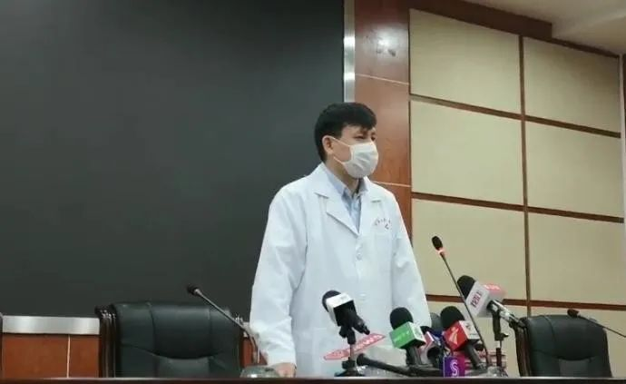

新冠疫情的启示：今后医院所有科室床位都可能减少，唯独ICU会增加
原文链接 备份链接 中国人均占有的ICU病床数，与西方发达国家相比显然不够。 在ICU人员配备不足的情况下超负荷运转， 就不可避免地将病人置于潜在的危险中 新冠肺炎感染后期，有相当比例的病人出现呼吸衰竭、肾功能衰竭、循环衰竭。重症管理的 …
澎湃新闻见习记者 张慧 彭友琦 记者 栾晓娜熊丰 陈斯斯
2月29日，8例新型冠状病毒肺炎病例从上海市公共卫生临床中心出院，当日出院患者均为轻症患者。截至目前，上海总共已有287例病例治愈出院，出院率已超85%。
张文宏说，如果病人出院复阳，上海有预备方案。拍摄：彭友琦 剪辑：曾茵子(02:29)
上海医疗救治专家组组长、复旦大学附属华山医院感染科主任张文宏在接受记者采访时表示，上海基本上还是比较稳定，但是还没有完全结束。今天出院以后，在上海85%的患者基本已经治愈了。目前还有15%的患者在这里，有些病人是后面比较晚才进来，所以出院时间会稍晚一些。
但是我想，按照正常的计划上海应该会顺利完成。但是不代表防疫工作就结束了，后面还有很多工作要继续做。
“这个防控真的是一盘大棋，你们别觉得我在这里说漂亮话，就是这么回事。整个上海对疫情的防控成绩优秀，我个人在这次防控里，主要就是跟我的医生兄弟们，有来自于重症医学的、呼吸医学的、感染医学的，心血管医学的、中医医学的、护理团队的、精神病医学的等，以及公卫中心的广大医护中心，在这一个多月，每天就在这里看300多个病人，所以其他的所有事情都是整个上海的防控团队在做。”张文宏说，医护人员的成绩，今天在这个时间节点来看，85%的病人出院，接下去每天还会有病人出院，整体的救治成绩，我觉得对得起上海人民，我们的成绩是及格的。
“我认为上海市的第一阶段的疫情防控成绩是优秀，但这不是我指挥的。我的任务就在这里，300多个病人，取得了60-80分的成绩。”张文宏说道。
张文宏在接受媒体记者采访时，还提到了病理研究的重要性。

他指出，此前，我们召开了病理解剖会议，还与来自北京的赵景民教授的病理解剖团队一起交流，他们也是世界上首个发表病理文章的研究团队，通过他们的病理研究，我们去了解这个病到底该如何治疗。
“他们在北京，我们在上海，这就是我们的日常工作要做的事，我们抓住这个领域的每个细微进展来充实到我们的治疗方案里面去，北京的赵景民教授跟我们呼吸医学的朱蕾教授、重症医学的毛恩强教授、感染医学的胡必杰教授和包括我在内的，以及公卫中心朱同玉教授等几十个人在一起对话，从赵景民教授早期做的病理研究里面，我们来制定上海治疗方案里的很多关键点，包括对毛细血管的保护、疾病加重的关键窗口，我们如何去判断病理表现，根据方案我们如何去阻止疾病的进展。”
“最近2-3周，上海没有一例重症病人进展到危重症的，这个就来自于我们对这个疾病的病理了解，通过与病理专家直接对话，我们进一步证实了上海方案里面提的一些细节是合理的。”他表示。
张文宏进一步表示，病理不是说用一台机器把毛细血管里的脏东西吸出来就搞定了，他不认可这种说法。“这种说法毫无科学，但在网络上却成为一个主流，我认为这是对医学极大地不负责任的宣传，我是觉得真正的医学是非常专业的团队，在以一种你们听不懂的语言，再深入思考，然后去制定一条条你们也看不懂的治疗方案，最后才把病人救治成功。”
张文宏称，对新冠肺炎患者的复检，取的样是咽拭子，就是咽喉部位。咽喉部位在病毒量非常大的时候，取一次就阳性一次，但是对于临界出院的病人中，当然会有很少的一部分病人，持续处于低病毒载量，在临界，这是一种可能。第二种可能是，取样时质量是不是好。
“所以，有很少的一部分病人，一开始两次阴性了，出院后又变成阳性了。这种出现是不奇怪的，但是这种阳性，我们应该注重的不是阴性或者阳性，也不是去找完整的病毒还是核酸片段，我个人认为这些不重要。”
张文宏表示，大家应该关心最本质的东西。如果你去吃一段饭，肚子饿死了，你不会去问这是山东菜还是上海菜，你只会去问这顿饭你会不会吃饱。所以，对于这次病毒疾病来讲，会不会传播才是最本质的问题。“所以我们非常关心的是，这些病人出院了，又复阳了，有没有再传给其他人呢？现在按照全国的数据来看，一个都没有，这个才是我们应该关心的。”
张文宏说，针对这件事情，上海很早就做了预备方案，即两次核酸阴性以后，还会给病人同时做干拭子。也就是说，你有核酸吞咽下去，口腔里、大便里、肠道里可能都会有这个病毒，所以全部要阴性。
在上海，出院两周后还要再采样再回访。“但我今天可以负责任的告诉你，到目前为止，上海没有出现再返阳的，但是这个不代表我们后面的病人也没有返阳的，这个不好讲。但是我关心的是，返阳了怎么办？所以我只关心，返阳的病人会不会再传播，这是第一点，到现在为止，没有看到这个数据。”张文宏还表示，第二点，为返阳的病人早就做好了储备。针对返阳的病人，为了安全起见，虽然现在没有传播的风险，但还是会给他独立隔离，吃好的、住好的，再观察两周，两周后再出院，好好恢复。“所以，我不认为这是一个非常大的问题，但是我们要谨慎对待。”
张文宏在接受记者采访时表示，血浆疗法是上海团队在武汉先行开始做的。做了10例，现在还在做，在公卫中心也有几例使用了血浆疗法。“目前可以给出的结论是，在这边的重症病人用了血浆疗法以后，可以促进他的病毒的转阴，这是我们预想到的，但是我这里又要讲了，任何一种疗法都只占了治疗的一部分，世界上不会有电影里面看到的那种情形——把血浆输进去以后病人就开始神奇般地恢复，马上坐了起来，吃饭行走，这个是不可能的，一点可能性都没有。”
张文宏进一步解释，所有的恢复期血浆，都是希望能通过一点特异性的抗体，给这个病人赋能，把病毒中和掉，促进他的转阴。比如说原来转阴需要5天到10天，现在可以快到3天到5天，提高的比例也是非常有限的。“所以说血浆治疗，对于早期患者可能可以促进转阴，但是对晚期的病人来讲，我们只是说它帮助我们促进重症病人的转阴，对我们有所帮助，绝不是说今天用了一个血浆治疗，所有（其它）治疗都不重要了。所以如果有谁提出来，只要用了这个疗法，就可以把所有病人都救活了，这种说法是不确切的。”
在上海的方案里面，就是一个非常明确的整合所有学科团队的力量，西医的每一个学科，重症、呼吸、感染、心脏，都在这里大家一起在做，中医的每一个团队在这里也非常认真，怎样把轻症的患者更快地康复，缩短他出院的天数，重症病人怎样促进他内环境的稳定。
张文宏表示，在上海病人平均的住院天数是14天。上海中西医团队，在一起工作很和谐。他说，“你可以去采访每一个中医生，因为在这里没有学派之争，只是说怎样对病人有利，什么对病人是有利的我们就采取谁的，所以在这里非常和谐。”张文宏表示，关于整体的治疗是最终要形成共识的，对重症病人的医治是依靠所有的力量一起。“上海有85%的病人被治愈，就说明大多数病人还是可以比较容易地治好的，但是这也是依靠各个团队，中医的西医的都在一起。”
戳这里进入
“全国新型冠状病毒感染病例实时地图”↓↓↓
本期编辑 常琛
推荐阅读


原文链接 备份链接 中国人均占有的ICU病床数，与西方发达国家相比显然不够。 在ICU人员配备不足的情况下超负荷运转， 就不可避免地将病人置于潜在的危险中 新冠肺炎感染后期，有相当比例的病人出现呼吸衰竭、肾功能衰竭、循环衰竭。重症管理的 …
原文链接 备份链接 科普有两种，一种是把真的事情告诉你 另外一种故弄虚玄把你带到沟里面去 2月28日，上海市新冠肺炎医疗救治专家组组长、复旦大学附属华山医院感染科主任张文宏接受中新社、《中国新闻周刊》记者专访。中新社记者 汤彦俊 摄 * …
原文链接 备份链接 【财新网】（记者 丁捷 赵宁）肆虐两个多月的新冠病毒已经袭击数万人，致2000多人死亡。病毒引发的症状从初期的发热、无力、轻咳，又恶化为呼吸衰竭，以及一系列的多器官衰竭，危及生命。在这场与死神争夺时间的“战役”中，氧气 …
原文链接 备份链接 澎湃新闻记者 贺梨萍 当地时间2月28日，由国家卫健委高级别专家组组长、中国工程院院士钟南山领衔的“中国2019新型冠状病毒疾病的临床特征”研究论文在顶级医学期刊《新英格兰医学杂志》（NEJM）上在线公开发表。该研究纳 …
原文链接 备份链接 新病毒面前，以往治疗经验会被推翻重来，很多当下的经验未经过时间考验，重症病人的治疗争议由此出现。 早期一些病人，起病快，病情很严重，病床不足加上120车辆供不应求，医院之间的周转并不顺畅，真正被送到ICU时，已经拖 …